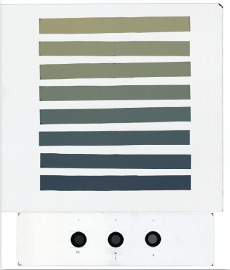

Film dosimetry#
Prerequisites for the tiff image#
A minimum distance of 5 mm between films.
Rectangular films aligned to the sides of the scanner.
The tiff image has to be 16-bit per channel, RGB.
For lateral response artifact:
The image must have the full width of the scanner.
The isocenter (on films) has to be in the center of the scanner.
This is a common example for film calibration.

Optional
Optical filters are added as a quality control test for error detection. Useful for example if auto correction for color or brightness has been applied unconsciously. Also, as a way to measure inter-scan reproducibility of the lamp/detector system.
Usage#
Example 1#
Start importing the load funtion and LUT class.
from Dosepy.image import load
from Dosepy.calibration import LUT
Read the tiff file for film calibration
# Change this to your file path
path_to_file = "/home/luis/Dosepy/tests/unit/fixtures/CAL20241106_001.tif"
cal_image = load(path_to_file)
Create a LUT object with the image as argument. This will store all the data needed for calibration.
cal = LUT(cal_image)
Dosepy automatically detects each object in the image.
Create central rois on each film and show them.
cal.set_central_rois()
cal.plot_rois()
<Axes: >
Change the ROI size to 16 x 8 mm, (if needed)
cal.set_central_rois(size = (16, 8))
cal.plot_rois()
<Axes: >
To set-up the calibration or cal object we need to perform the following steps:
Set the imparted doses to the films [Gy].
Compute the lut.
Optional, apply a filer of size of 3 pixels for noise reduction.
cal.set_doses([0, 0.5, 1, 2, 4, 6, 8, 10])
cal.compute_central_lut(filter=3)
Show results#
Plot the calibration curve, using the red channel and rational function of the form
where $\( x = \frac{I}{I_0} \)$ represents the film response as the quotient of intensities of unexposed and exposed films, respectively.
cal.plot_fit(fit="rational", channel="red")
Plot dose uncertainty with plot_dose_fit_unertainty method
cal.plot_dose_fit_uncertainty(fit="rational", channel="red")
Example 2#
Lateral response#
Lateral response artifact is handled by computing a calibration curve at every milimeter in lateral direction.
If film irradiation has been done in a x-ray beam from a linear acelerator, we need to account for the “beam horns”. To do that, we need to load a relative dose profile of the field used. In this example, a 6 MV beam of size 150 mm x 150 mm and 5 mm deep was used for film calibration.
The file must have an array of two columns:
First column should be for positions, given in mm, with 0 being at beam center.
Second column should be the relative values [%], normalized to 100 at center.
cal = LUT(cal_image)
cal.set_central_rois(size = (180, 8))
cal.set_doses([0, 0.5, 1, 2, 4, 6, 8, 10])
cal.plot_rois()
cal.set_beam_profile("/home/luis/Dosepy/tests/unit/fixtures/CAL/BeamProfile.csv") # Change this to your path
Next we need to call the compute_lateral_lut() (instead of compute_central_lut()). We’ll use a filter of size 3 pixels.
cal.compute_lateral_lut(filter=3)
Optional, show green intensity values on lateral direction. The zero position is located in the center of the image, i.e. the center of the scanner if the full width has been acquired.
cal.plot_lateral_response(channel="green")
We can use the green channel and a polynomial fit function of the form
To see the calibration curve at say, position 5 mm from the center, we can use the plot_fit() method.
cal.plot_fit(
fit="polynomial",
channel="green",
position=5,
)
Show uncertainty at 5 mm.
cal.plot_dose_fit_uncertainty(
position = 5,
fit="polynomial",
channel="green"
)
Example 3#
Load multiple files for noise reduction#
Multiple files can be averaged. As a prerequisite, the file name has to be the same, ignoring the last three characters.
from Dosepy.image import load_multiples
files = [
"/media/luis/TOMO/Tiff Films/EBT4/6NOV24_CAL/CAL20241106_001.tif",
"/media/luis/TOMO/Tiff Films/EBT4/6NOV24_CAL/CAL20241106_002.tif",
"/media/luis/TOMO/Tiff Films/EBT4/6NOV24_CAL/CAL20241106_003.tif",
]
img_m = load_multiples(files)
img_m.plot()
<Axes: >
cal = LUT(img_m)
cal.set_central_rois(size = (180, 8))
cal.set_doses([0, 0.5, 1, 2, 4, 6, 8, 10])
cal.plot_rois()
cal.set_beam_profile("/home/luis/Dosepy/tests/unit/fixtures/CAL/BeamProfile.csv")
cal.compute_lateral_lut(filter = 5)
Plot calibration curve, for example, at 50 mm.#
cal.plot_fit(
fit="polynomial",
channel="green",
position=50,
)
Show uncertainty at different lateral positions#
import matplotlib.pyplot as plt
colors = ["b", "g", "r", "c", "m", "y", "k"]
positions = [-50, -20, -10, 0, 10, 20, 50] # In milimeters
fig, ax = plt.subplots()
for c, p in zip(colors, positions):
cal.plot_dose_fit_uncertainty(
position = p,
fit="polynomial",
channel="green",
ax=ax,
label=f"{p} mm",
markeredgecolor=c,
markerfacecolor=c,
)
ax.legend()
<matplotlib.legend.Legend at 0x7476a9f60650>
# Clear memory
del img_m, cal_image
Film to dose#
The next image is going to be used for verification. It was irradiated with 5.0 Gy (a dose value not used for calibration).
Note
The image must also have an unirradiated film as a reference for 0 Gy.
# Load the images
files = [
"/media/luis/TOMO/Tiff Films/EBT4/Verif 15x15/Ver_050dpi20241106_001.tif",
"/media/luis/TOMO/Tiff Films/EBT4/Verif 15x15/Ver_050dpi20241106_002.tif",
"/media/luis/TOMO/Tiff Films/EBT4/Verif 15x15/Ver_050dpi20241106_003.tif",
]
qa_image = load_multiples(files)
qa_image.plot()
<Axes: >
(Optional) Quality control using optical filters#
Quality control test to check reproducibility of the scanner using mean intensity of optical filters using red channel. The test pass if the intensity of the optical filters in the image is equal to the intensity of the optical filters in the image used for calibration, within a relative tolerance.
from Dosepy.calibration import passed_QC
passed_QC(img=qa_image, lut=cal, rtol=0.01) # Relative tolerance of 1%
Intensity of optical filter(s) in calibration.
([np.float64(9345.198660714286), np.float64(13275.963083604778), np.float64(20718.336886993602)],)
Intensity of optical filter(s) in the image.
[np.float64(9429.098324022347), np.float64(13383.234273318873), np.float64(20924.68770053476)]
True
Import the tiff to dose manager. Use “GP” for green channel and a polynomial fit function.
from Dosepy.tiff2dose import Tiff2DoseM
t2d = Tiff2DoseM()
dose = t2d.get_dose(
img=qa_image,
format="GP",
lut=cal
)
/home/luis/miniconda3/envs/dp/lib/python3.11/site-packages/Dosepy/tools/functions.py:19: RuntimeWarning: invalid value encountered in power
return a*x + b*x**n
Plot the dose distribution
import matplotlib.pyplot as plt
import numpy as np
fig, ax = plt.subplots()
axeI = ax.imshow(
dose.array,
cmap="nipy_spectral",
vmin=4.5,
vmax=5.5)
fig.colorbar(axeI, ax=ax)
<matplotlib.colorbar.Colorbar at 0x7476a80f1c10>
Save the dose distribution as a tif file (in cGy). Useful for further analysis using ImageJ.
#dose.save_as_tif("dose_in_tif_file")
Dose at center#
dose_at_center = dose.array[110:140, 450:480]
np.mean(dose_at_center)
np.float64(5.12134267080905)
# Show the ROI
roi = plt.Rectangle((450, 110), 30, 30, fill=False)
ax.add_patch(roi)
fig
A difference of 0.12 Gy (2.4%) is obtainded, with respect to the known dose of 5.0 Gy. As previously showed, it is within dose uncertainty.